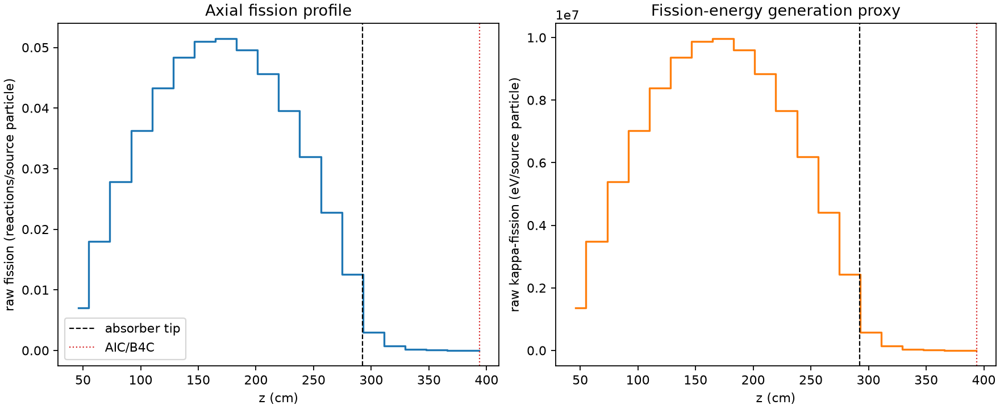
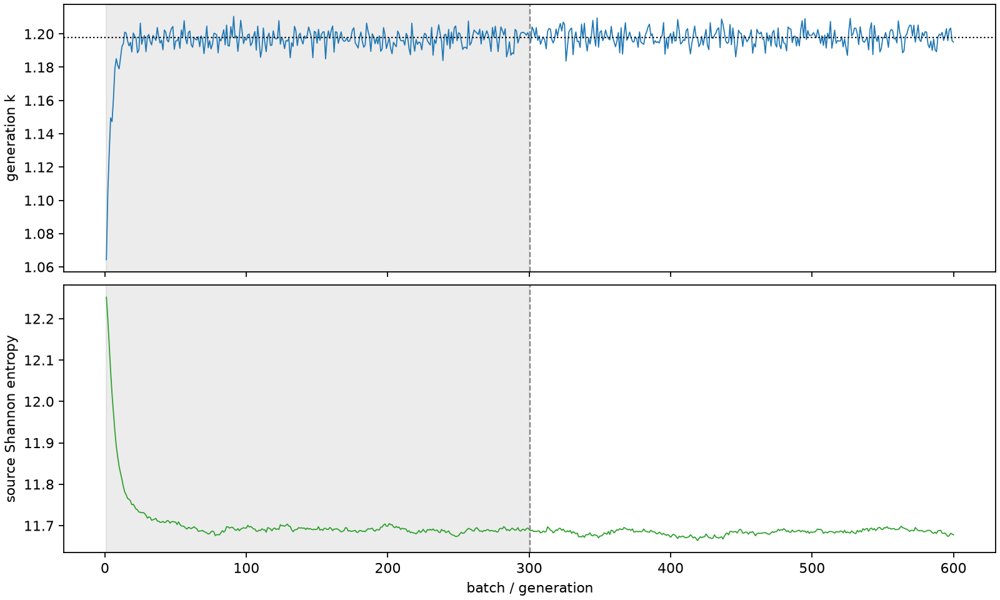

| field | value |
|---|---|
| experiment | V2-STAGE_256_OGRENCI_03-0023 |
| k | 1.197843324844247 |
| MC standard error | 0.00018721685819290474 |
| seconds | 908.346965114004 |
| acceptance | not_assessed |
| convergence | review_required |
Completed is output integrity only; physical and statistical review required. Zero tallies do not prove zero production or zero uncertainty.
| diagnostic | value |
|---|---|
| geometric fuel voxels | 5280 |
| zero fission tally voxels | 0 |
| low signal fuel voxels | 767 |
| low signal fission share | 0.00010945798387256462 |
| low signal kappa share | 0.00010949846771145163 |
| important fission share | 0.9500532541716371 |
| previous filter included | 4513 |
| duration estimate s | 1562.5173488400023 |
| actual minus estimate s | -654.1703837259984 |
| fission relative MC error | statistics |
|---|---|
| all_geometric_fuel | {"voxels": 5280, "positive_mean_voxels": 5280, "zero_mean_voxels": 0, "undefined_relative_error_voxels": 0, "median": 0.011262094687438023, "p95": 0.5538854442287037, "maximum": 1.0} |
| low_signal | {"voxels": 767, "positive_mean_voxels": 767, "zero_mean_voxels": 0, "undefined_relative_error_voxels": 0, "median": 0.4260694363973336, "p95": 0.8995169253605325, "maximum": 1.0} |
| important_95pct | {"voxels": 3153, "positive_mean_voxels": 3153, "zero_mean_voxels": 0, "undefined_relative_error_voxels": 0, "median": 0.00877066934683833, "p95": 0.01292760446894107, "maximum": 0.015232878762681326} |
| outside_previous_filter | {"voxels": 767, "positive_mean_voxels": 767, "zero_mean_voxels": 0, "undefined_relative_error_voxels": 0, "median": 0.4260694363973336, "p95": 0.8995169253605325, "maximum": 1.0} |
| kappa_fission relative MC error | statistics |
|---|---|
| all_geometric_fuel | {"voxels": 5280, "positive_mean_voxels": 5280, "zero_mean_voxels": 0, "undefined_relative_error_voxels": 0, "median": 0.0112497017813663, "p95": 0.5529815034066511, "maximum": 1.0000000000000002} |
| low_signal | {"voxels": 767, "positive_mean_voxels": 767, "zero_mean_voxels": 0, "undefined_relative_error_voxels": 0, "median": 0.4254442166677566, "p95": 0.8994392083764278, "maximum": 1.0000000000000002} |
| important_95pct | {"voxels": 3153, "positive_mean_voxels": 3153, "zero_mean_voxels": 0, "undefined_relative_error_voxels": 0, "median": 0.008761071582491271, "p95": 0.01291207331376465, "maximum": 0.015215575755957557} |
| outside_previous_filter | {"voxels": 767, "positive_mean_voxels": 767, "zero_mean_voxels": 0, "undefined_relative_error_voxels": 0, "median": 0.4254442166677566, "p95": 0.8994392083764278, "maximum": 1.0000000000000002} |
| axial bin | fission share | kappa-fission share |
|---|---|---|
| 1 | 0.014377600302008475 | 0.014378253083171989 |
| 2 | 0.036711876723070885 | 0.036711672353601864 |
| 3 | 0.056853474825784976 | 0.05685319452676607 |
| 4 | 0.07418176983494339 | 0.0741817275838512 |
| 5 | 0.08847289267771653 | 0.08847267146483576 |
| 6 | 0.09890286042447215 | 0.09890250564878081 |
| 7 | 0.10427884993602858 | 0.10427851623446245 |
| 8 | 0.10512140358558719 | 0.10512114770028061 |
| 9 | 0.10137911661472347 | 0.10137867069078457 |
| 10 | 0.09325545086353063 | 0.09325504074824051 |
| 11 | 0.08090489003303698 | 0.08090460846970321 |
| 12 | 0.06533265045433054 | 0.06533245092366251 |
| 13 | 0.04660774874558893 | 0.04660751212658284 |
| 14 | 0.025577872513024177 | 0.025578038762302854 |
| 15 | 0.006117930020636718 | 0.006119721730305354 |
| 16 | 0.0014572941825183522 | 0.0014577765311008049 |
| 17 | 0.0003481012372612063 | 0.00034822950389314724 |
| 18 | 9.303587354409777e-05 | 9.307099212969867e-05 |
| 19 | 2.1576795601880395e-05 | 2.1584532255117674e-05 |
| 20 | 3.604356590910105e-06 | 3.606393288588379e-06 |
Histories include the inactive-to-active transition at batch 300. kappa-fission approximates fission energy production, not total heat deposition.

